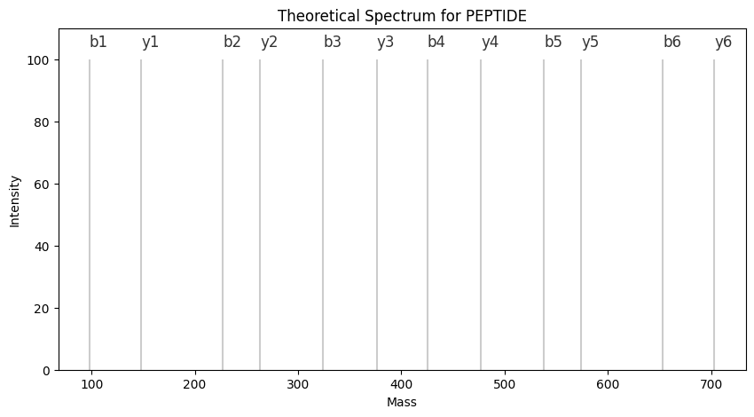

protease = "trypsin"
n_missed_cleavages = 0
pep_length_min, pep_length_max = 6, 65
cleave_sequence('ABCDEFGHIJKLMNOPQRST', n_missed_cleavages, protease, pep_length_min, pep_length_max)['ABCDEFGHIJK', 'LMNOPQR']This notebook contains all functions related to creating spectra from FASTA files. In brief, what we are doing is the following:
Currently, numba has only limited string support. A lot of the functions are therefore Python-native.
We use regular expressions to find potential cleavage sites for cleaving and write the wrapper cleave_sequence to use it.
cleave_sequence (sequence:str='', n_missed_cleavages:int=0, protease:str='trypsin', pep_length_min:int=6, pep_length_max:int=65, **kwargs)
Cleave a sequence with a given protease. Filters to have a minimum and maximum length. Args: sequence (str): the given (protein) sequence. n_missed_cleavages (int): the number of max missed cleavages. protease (str): the protease/enzyme name, the regular expression can be found in alphapept.constants.protease_dict. pep_length_min (int): min peptide length. pep_length_max (int): max peptide length. Returns: list (of str): cleaved peptide sequences with missed cleavages.
get_missed_cleavages (sequences:list, n_missed_cleavages:int)
Combine cleaved sequences to get sequences with missed cleavages Args: seqeuences (list of str): the list of cleaved sequences, no missed cleavages are there. n_missed_cleavages (int): the number of miss cleavage sites. Returns: list (of str): the sequences with missed cleavages.
The following are helper functions to retrieve the number of missed cleavages and internal cleavage sites for each sequence.
count_internal_cleavages (sequence:str='', protease:str='trypsin', **kwargs)
Counts the number of internal cleavage sites for a given sequence and protease Args: sequence (str): the given (peptide) sequence. protease (str): the protease/enzyme name, the regular expression can be found in alphapept.constants.protease_dict. Returns: int (0 or 1): if the sequence is from internal cleavage.
count_missed_cleavages (sequence:str='', protease:str='trypsin', **kwargs)
Counts the number of missed cleavages for a given sequence and protease Args: sequence (str): the given (peptide) sequence. protease (str): the protease/enzyme name, the regular expression can be found in alphapept.constants.protease_dict. Returns: int: the number of miss cleavages
Peptides are composed out of amino acids that are written in capital letters - PEPTIDE. To distinguish modifications, they are written in lowercase such as PEPTIoxDE and can be of arbitrary length. For a modified amino acid (AA), the modification precedes the letter of the amino acid. Decoys are indicated with an underscore. Therefore, the parse function splits after _. When parsing, the peptide string is converted into a numba-compatible list, like so: PEPoxTIDE -> [P, E, P, oxT, I, D, E]. This allows that we can use the mass_dict from alphapept.constants to directly determine the masses for the corresponding amino acids.
list_to_numba (a_list)
Convert Python list to numba.typed.List Args: a_list (list): Python list. Return: List (numba.typed.List): Numba typed list.
parse (peptide:str)
Parser to parse peptide strings Args: peptide (str): modified peptide sequence. Return: List (numba.typed.List): a list of animo acids and modified amono acids
The decoy strategy employed is a pseudo-reversal of the peptide sequence, keeping only the terminal amino acid and reversing the rest. Additionally, we can call the functions swap_KR and and swap_AL that will swap the respective AAs. The function swap_KR will only swap terminal AAs. The swapping functions only work if the AA is not modified.
add_decoy_tag (peptides)
Adds a ’_decoy’ tag to a list of peptides
get_decoys (peptide_list, pseudo_reverse=False, AL_swap=False, KR_swap=False, **kwargs)
Wrapper to get decoys for lists of peptides Args: peptide_list (list): the list of peptides to be reversed. pseudo_reverse (bool): If True, reverse the peptide bug keep the C-terminal amino acid; otherwise reverse the whole peptide. (Default: False) AL_swap (bool): replace A with L, and vice versa. (Default: False) KR_swap (bool): replace K with R at the C-terminal, and vice versa. (Default: False) Returns: list (of str): a list of decoy peptides
swap_AL (peptide:str)
Swaps a A with L. Note: Only if AA is not modified. Args: peptide (str): peptide.
Returns: str: peptide with swapped ALs.
swap_KR (peptide:str)
Swaps a terminal K or R. Note: Only if AA is not modified.
Args: peptide (str): peptide.
Returns: str: peptide with swapped KRs.
get_decoy_sequence (peptide:str, pseudo_reverse:bool=False, AL_swap:bool=False, KR_swap:bool=False)
Reverses a sequence and adds the ’_decoy’ tag. Args: peptide (str): modified peptide to be reversed. pseudo_reverse (bool): If True, reverse the peptide bug keep the C-terminal amino acid; otherwise reverse the whole peptide. (Default: False) AL_swap (bool): replace A with L, and vice versa. (Default: False) KR_swap (bool): replace K with R at the C-terminal, and vice versa. (Default: False) Returns: str: reversed peptide ending with the ’_decoy’ tag.
[K, K, K, L, A, K, K, K, ...]
[A, A, A, K, R, A, A, A, ...]To add modifications to the peptides, we distinguish fixed and variable modifications. Additionally, we make a distinction between whether the modification is only terminal or not.
Fixed modifications are implemented by passing a list with modified AAs that should be replaced. As a AA is only one letter, the remainder is the modification.
add_fixed_mods (seqs:list, mods_fixed:list, **kwargs)
Adds fixed modifications to sequences. Args: seqs (list of str): sequences to add fixed modifications mods_fixed (list of str): the string list of fixed modifications. Each modification string must be in lower case, except for that the last letter must be the modified amino acid (e.g. oxidation on M should be oxM). Returns: list (of str): the list of the modified sequences. ‘ABCDEF’ with fixed mod ‘cC’ will be ‘ABcCDEF’.
['AbBcCDEF']To employ variable modifications, we loop through each variable modification and each position of the peptide and add them to the peptide list. For each iteration in get_isoforms, one more variable modification will be added.
get_isoforms (mods_variable_dict:dict, peptide:str, isoforms_max:int, n_modifications_max:int=None)
Function to generate modified forms (with variable modifications) for a given peptide - returns a list of modified forms. The original sequence is included in the list Args: mods_variable_dict (dict): Dicitionary with modifications. The key is AA, and value is the modified form (e.g. oxM). peptide (str): the peptide sequence to generate modified forms. isoforms_max (int): max number of modified forms to generate per peptide. n_modifications_max (int, optional): max number of variable modifications per peptide. Returns: list (of str): the list of peptide forms for the given peptide
add_variable_mod (peps:list, mods_variable_dict:dict)
Function to add variable modification to a list of peptides. Args: peps (list): List of peptides. mods_variable_dict (dict): Dicitionary with modifications. The key is AA, and value is the modified form (e.g. oxM). Returns: list : the list of peptide forms for the given peptide.
mods_variable_dict = {'S':'pS','P':'pP','M':'oxM'}
isoforms_max = 1024
print(get_isoforms(mods_variable_dict, 'PEPTIDE', isoforms_max))
print(get_isoforms(mods_variable_dict, 'AMAMA', isoforms_max))
print(get_isoforms(mods_variable_dict, 'AMAMA', isoforms_max, n_modifications_max=1))['PEPTIDE', 'pPEPTIDE', 'PEpPTIDE', 'pPEpPTIDE']
['AMAMA', 'AoxMAMA', 'AMAoxMA', 'AoxMAoxMA']
['AMAMA', 'AoxMAMA', 'AMAoxMA']Lastly, we define the wrapper add_variable_mods so that the functions can be called for lists of peptides and a list of variable modifications.
add_variable_mods (peptide_list:list, mods_variable:list, isoforms_max:int, n_modifications_max:int, **kwargs)
Add variable modifications to the peptide list Args: peptide_list (list of str): peptide list. mods_variable (list of str): modification list. isoforms_max (int): max number of modified forms per peptide sequence. n_modifications_max (int): max number of variable modifications per peptide. Returns: list (of str): list of modified sequences for the given peptide list.
To handle terminal modifications, we use the following convention:
< for the left side (N-terminal)> for the right side (C-Terminal)Additionally, if we want to have a terminal modification on any AA we indicate this ^.
add_fixed_mods_terminal (peptides:list, mods_fixed_terminal:list, **kwargs)
Wrapper to add fixed mods on sequences and lists of mods Args: peptides (list of str): peptide list. mods_fixed_terminal (list of str): list of fixed terminal mods. Raises: “Invalid fixed terminal modification {mod}” exception for the given mod. Returns: list (of str): list of peptides with modification added.
add_fixed_mod_terminal (peptides:list, mod:str)
Adds fixed terminal modifications Args: peptides (list of str): peptide list. mod (str): n-term mod contains ‘<^’ (e.g. a<^ for Acetyl@N-term); c-term mod contains ‘>^’. Raises: “Invalid fixed terminal modification ‘mod name’” for the given mod. Returns: list (of str): list of peptides with modification added.
peptide = ['AMAMA']
print(f'Starting with peptide {peptide}')
print('Any n-term modified with x (x<^):', add_fixed_mods_terminal(peptide, ['x<^']))
print('Any c-term modified with x (x>^):', add_fixed_mods_terminal(peptide, ['x>^']))
print('Only A on n-term modified with x (x<A):', add_fixed_mods_terminal(peptide, ['x<A']))
print('Only A on c-term modified with x (x<A):', add_fixed_mods_terminal(peptide, ['x>A']))Starting with peptide ['AMAMA']
Any n-term modified with x (x<^): ['xAMAMA']
Any c-term modified with x (x>^): ['AMAMxA']
Only A on n-term modified with x (x<A): ['xAMAMA']
Only A on c-term modified with x (x<A): ['AMAMxA']Lastly, to handle terminal variable modifications, we use the function add_variable_mods_terminal. As the modification can only be at the terminal end, this function only adds a peptide where the terminal end is modified.
get_unique_peptides (peptides:list)
Function to return unique elements from list. Args: peptides (list of str): peptide list. Returns: list (of str): list of peptides (unique).
add_variable_mods_terminal (peptides:list, mods_variable_terminal:list, **kwargs)
Function to add variable terminal modifications. Args: peptides (list of str): peptide list. mods_variable_terminal (list of str): list of variable terminal mods. Returns: list (of str): list of peptides with modification added.
Lastly, we put all the functions into a wrapper generate_peptides. It will accept a peptide and a dictionary with settings so that we can get all modified peptides.
check_peptide (peptide:str, AAs:set)
Check if the peptide contains non-AA letters. Args: peptide (str): peptide sequence. AAs (set): the set of legal amino acids. See alphapept.constants.AAs Returns: bool: True if all letters in the peptide is the subset of AAs, otherwise False
generate_peptides (peptide:str, **kwargs)
Wrapper to get modified peptides (fixed and variable mods) from a peptide.
Args: peptide (str): the given peptide sequence. Returns: list (of str): all modified peptides.
TODO: There can be some edge-cases which are not defined yet. Example: Setting the same fixed modification - once for all peptides and once for only terminal for the protein. The modification will then be applied twice.
kwargs = {}
kwargs["protease"] = "trypsin"
kwargs["n_missed_cleavages"] = 2
kwargs["pep_length_min"] = 6
kwargs["pep_length_max"] = 27
kwargs["mods_variable"] = ["oxM"]
kwargs["mods_variable_terminal"] = []
kwargs["mods_fixed"] = ["cC"]
kwargs["mods_fixed_terminal"] = []
kwargs["mods_fixed_terminal_prot"] = []
kwargs["mods_variable_terminal_prot"] = ['a<^']
kwargs["isoforms_max"] = 1024
kwargs["n_modifications_max"] = None
generate_peptides('PEPTIDEM', **kwargs)['PEPTIDEM',
'PEPTIDEoxM',
'MEDITPEP_decoy',
'oxMEDITPEP_decoy',
'PEPTIDEM',
'PEPTIDEoxM',
'MEDITPEP_decoy',
'oxMEDITPEP_decoy',
'aPEPTIDEM',
'aPEPTIDEoxM',
'MEDITPEaP_decoy',
'oxMEDITPEaP_decoy',
'aPEPTIDEM',
'aPEPTIDEoxM',
'MEDITPEaP_decoy',
'oxMEDITPEaP_decoy']Using the mass_dict from constants and being able to parse sequences with parse, one can simply look up the masses for each modified or unmodified amino acid and add everything up.
To calculate the mass of the neutral precursor, we start with the mass of an \(H_2O\) and add the masses of all amino acids of the sequence.
get_precmass (parsed_pep:list, mass_dict:numba.typed.typeddict.Dict)
Calculate the mass of the neutral precursor Args: parsed_pep (list or numba.typed.List of str): the list of amino acids and modified amono acids. mass_dict (numba.typed.Dict): key is the amino acid or the modified amino acid, and the value is the mass. Returns: float: the peptide neutral mass.
Likewise, we can calculate the masses of the fragment ions. We employ two functions: get_fragmass and get_frag_dict.
get_fragmass is a fast, numba-compatible function that calculates the fragment masses and returns an array indicating whether the ion-type was b or y.
get_frag_dict instead is not numba-compatible and hence a bit slower. It returns a dictionary with the respective ion and can be used for plotting theoretical spectra.
get_fragmass (parsed_pep:list, mass_dict:numba.typed.typeddict.Dict)
Calculate the masses of the fragment ions Args: parsed_pep (numba.typed.List of str): the list of amino acids and modified amono acids. mass_dict (numba.typed.Dict): key is the amino acid or the modified amino acid, and the value is the mass. Returns: Tuple[np.ndarray(np.float64), np.ndarray(np.int8)]: the fragment masses and the fragment types (represented as np.int8). For a fragment type, positive value means the b-ion, the value indicates the position (b1, b2, b3…); the negative value means the y-ion, the absolute value indicates the position (y1, y2, …).
(array([ 98.06004033, 227.10263343, 324.15539729, 425.20307579,
538.28713979, 653.31408289, 148.06043425, 263.08737735,
376.17144135, 477.21911985, 574.27188371, 703.31447681]),
array([ 1, 2, 3, 4, 5, 6, -1, -2, -3, -4, -5, -6], dtype=int8))get_frag_dict (parsed_pep:list, mass_dict:dict)
Calculate the masses of the fragment ions Args: parsed_pep (list or numba.typed.List of str): the list of amino acids and modified amono acids. mass_dict (numba.typed.Dict): key is the amino acid or the modified amino acid, and the value is the mass. Returns: dict{str:float}: key is the fragment type (b1, b2, …, y1, y2, …), value is fragment mass.
{'b1': 98.06004032687,
'b2': 227.10263342687,
'b3': 324.15539728686997,
'b4': 425.20307578687,
'b5': 538.28713978687,
'b6': 653.31408288687,
'y1': 148.06043425033,
'y2': 263.08737735033,
'y3': 376.17144135033,
'y4': 477.21911985033,
'y5': 574.27188371033,
'y6': 703.31447681033}This allows us also to generate the theoretical isotopes for a fragment:
import matplotlib.pyplot as plt
peptide = 'PEPTIDE'
frag_dict = get_frag_dict(parse(peptide), constants.mass_dict)
db_frag = list(frag_dict.values())
db_int = [100 for _ in db_frag]
plt.figure(figsize=(10,5))
plt.vlines(db_frag, 0, db_int, "k", label="DB", alpha=0.2)
for _ in frag_dict.keys():
plt.text(frag_dict[_], 104, _, fontsize=12, alpha = 0.8)
plt.title('Theoretical Spectrum for {}'.format(peptide))
plt.xlabel('Mass')
plt.ylabel('Intensity')
plt.ylim([0,110])
plt.show()
The function get_spectrum returns a tuple with the following content:
Likewise, get_spectra returns a list of tuples. We employ a list of tuples here as this way, we can sort them easily by precursor mass.
get_spectra (peptides:numba.typed.typedlist.List, mass_dict:numba.typed.typeddict.Dict)
Get neutral peptide mass, fragment masses and fragment types for a list of peptides Args: peptides (list of str): the (modified) peptide list. mass_dict (numba.typed.Dict): key is the amino acid or modified amino acid, and the value is the mass. Raises: Unknown exception and pass. Returns: list of Tuple[float, str, np.ndarray(np.float64), np.ndarray(np.int8)]: See get_spectrum.
get_spectrum (peptide:str, mass_dict:numba.typed.typeddict.Dict)
Get neutral peptide mass, fragment masses and fragment types for a peptide Args: peptide (str): the (modified) peptide. mass_dict (numba.typed.Dict): key is the amino acid or modified amino acid, and the value is the mass. Returns: Tuple[float, str, np.ndarray(np.float64), np.ndarray(np.int8)]: (peptide mass, peptide, fragment masses, fragment_types), for fragment types, see get_fragmass.
[(799.35996420346, 'PEPTIDE', array([ 98.06004033, 148.06043425, 227.10263343, 263.08737735,
324.15539729, 376.17144135, 425.20307579, 477.21911985,
538.28713979, 574.27188371, 653.31408289, 703.31447681]), array([ 1, -1, 2, -2, 3, -3, 4, -4, 5, -5, 6, -6], dtype=int8)), ...]To read FASTA files, we use the SeqIO module from the Biopython library. This is a generator expression so that we read one FASTA entry after another until the StopIteration is reached, which is implemented in read_fasta_file. Additionally, we define the function read_fasta_file_entries that simply counts the number of FASTA entries.
All FASTA entries that contain AAs which are not in the mass_dict can be checked with check_sequence and will be ignored.
check_sequence (element:dict, AAs:set, verbose:bool=False)
Checks wheter a sequence from a FASTA entry contains valid AAs Args: element (dict): fasta entry of the protein information. AAs (set): a set of amino acid letters. verbose (bool): logging the invalid amino acids. Returns: bool: False if the protein sequence contains non-AA letters, otherwise True.
read_fasta_file_entries (fasta_filename='')
Function to count entries in fasta file Args: fasta_filename (str): fasta. Returns: int: number of entries.
read_fasta_file (fasta_filename:str='')
Read a FASTA file line by line Args: fasta_filename (str): fasta. Yields: dict {id:str, name:str, description:str, sequence:str}: protein information.
#load example fasta file
fasta_path = '../testfiles/test.fasta'
list(read_fasta_file(fasta_path))[0]{'id': 'A0PJZ0',
'name': 'sp|A0PJZ0|A20A5_HUMAN',
'description': 'sp|A0PJZ0|A20A5_HUMAN Putative ankyrin repeat domain-containing protein 20A5 OS=Homo sapiens OX=9606 GN=ANKRD20A5P PE=5 SV=1',
'sequence': 'MKLFGFRSRRGQTVLGSIDHLYTGSGYRIRYSELQKIHKAAVKGDAAEMERCLARRSGDLDALDKQHRTALHLACASGHVKVVTLLVNRKCQIDIYDKENRTPLIQAVHCQEEACAVILLEHGANPNLKDIYGNTALHYAVYSESTSLAEKLLFHGENIEALDKV'}In order to efficiently store peptides, we rely on the Python dictionary. The idea is to have a dictionary with peptides as keys and indices to proteins as values. This way, one can quickly look up to which protein a peptide belongs to. The function add_to_pept_dict uses a regular python dictionary and allows to add peptides and stores indices to the originating proteins as a list. If a peptide is already present in the dictionary, the list is appended. The function returns a list of added_peptides, which were not present in the dictionary yet. One can use the function merge_pept_dicts to merge multiple peptide dicts.
add_to_pept_dict (pept_dict:dict, new_peptides:list, i:int)
Add peptides to the peptide dictionary Args: pept_dict (dict): the key is peptide sequence, and the value is protein id list indicating where the peptide is from. new_peptides (list): the list of peptides to be added to pept_dict. i (int): the protein id where new_peptides are from. Returns: dict: same as the pept_dict in the arguments. list (of str): the peptides from new_peptides that not in the pept_dict.
pept_dict = {}
new_peptides = ['ABC','DEF']
pept_dict, added_peptides = add_to_pept_dict(pept_dict, new_peptides, 0)
new_peptides = ['DEF','GHI']
pept_dict, added_peptides = add_to_pept_dict(pept_dict, new_peptides, 1)
print(pept_dict){'ABC': [0], 'DEF': [0, 1], 'GHI': [1]}merge_pept_dicts (list_of_pept_dicts:list)
Merge a list of peptide dict into a single dict. Args: list_of_pept_dicts (list of dict): the key of the pept_dict is peptide sequence, and the value is protein id list indicating where the peptide is from. Returns: dict: the key is peptide sequence, and the value is protein id list indicating where the peptide is from.
To wrap everything up, we employ two functions, generate_database and generate_spectra. The first one reads a FASTA file and generates a list of peptides, as well as the peptide dictionary and an ordered FASTA dictionary to be able to look up the protein indices later. For the callback we first read the whole FASTA file to determine the total number of entries in the FASTA file. For a typical FASTA file of 30 Mb with 40k entries, this should take less than a second. The progress of the digestion is monitored by processing the FASTA file one by one. The function generate_spectra then calculates precursor masses and fragment ions. Here, we split the total_number of sequences in 1000 steps to be able to track progress with the callback.
generate_fasta_list (fasta_paths:list, callback=None, **kwargs)
Function to generate a database from a fasta file Args: fasta_paths (str or list of str): fasta path or a list of fasta paths. callback (function, optional): callback function. Returns: fasta_list (list of dict): list of protein entry dict {id:str, name:str, description:str, sequence:str}. fasta_dict (dict{int:dict}): the key is the protein id, the value is the protein entry dict.
generate_database (mass_dict:dict, fasta_paths:list, callback=None, **kwargs)
Function to generate a database from a fasta file Args: mass_dict (dict): not used, will be removed in the future. fasta_paths (str or list of str): fasta path or a list of fasta paths. callback (function, optional): callback function. Returns: to_add (list of str): non-redundant (modified) peptides to be added. pept_dict (dict{str:list of int}): the key is peptide sequence, and the value is protein id list indicating where the peptide is from. fasta_dict (dict{int:dict}): the key is the protein id, the value is the protein entry dict {id:str, name:str, description:str, sequence:str}.
generate_spectra (to_add:list, mass_dict:dict, callback=None)
Function to generate spectra list database from a fasta file Args: to_add (list): mass_dict (dict{str:float}): amino acid mass dict. callback (function, optional): callback function. (Default: None) Returns: list (of tuple): list of (peptide mass, peptide, fragment masses, fragment_types), see get_fragmass.
To speed up spectra generated, one can use the parallelized version. The function generate_database_parallel reads an entire FASTA file and splits it into multiple blocks. Each block will be processed, and the generated pept_dicts will be merged.
blocks (l:int, n:int)
Helper function to create blocks from a given list Args: l (list): the list n (int): size per block Returns: Generator: List with splitted elements
block_idx (len_list:int, block_size:int=1000)
Helper function to split length into blocks Args: len_list (int): list length. block_size (int, optional, default 1000): size per block. Returns: list[(int, int)]: list of (start, end) positions of blocks.
generate_database_parallel (settings:dict, callback=None)
Function to generate a database from a fasta file in parallel. Args: settings: alphapept settings. Returns: list: theoretical spectra. See generate_spectra() dict: peptide dict. See add_to_pept_dict() dict: fasta_dict. See generate_fasta_list()
digest_fasta_block (to_process:tuple)
Digest and create spectra for a whole fasta_block for multiprocessing. See generate_database_parallel.
In some cases (e.g., a lot of modifications or very large FASTA files), it will not be useful to save the database as it will consume too much memory. Here, we use the function search_parallel from search. It creates theoretical spectra on the fly and directly searches against them. As we cannot create a pept_dict here, we need to create one from the search results. For this, we group peptides by their FASTA index and generate a lookup dictionary that can be used as a pept_dict.
Note that we are passing the settings argument here. Search results should be stored in the corresponding path in the
*.hdffile.
pept_dict_from_search (settings:dict)
Generates a peptide dict from a large search.
To save the generated spectra, we rely on the HDF format. For this, we create a dictionary and save all the generated elements. The container will contain the following elements:
precursors: An array containing the precursor massesseqs: An array containing the peptide sequences for the precursor massespept_dict: A peptide dictionary to look up the peptides and return their FASTA indexfasta_dict: A FASTA dictionary to look up the FASTA entry based on a pept_dict indexfragmasses: An array containing the fragment masses. Unoccupied cells are filled with -1fragtypes:: An array containing the fragment types. 0 equals b-ions, and 1 equals y-ions. Unoccupied cells are filled with -1bounds: An integer array containing the upper bounds for the fragment masses/types array. This is needed to quickly slice the data.All arrays are sorted according to the precursor mass.
To access the dictionaries such as pept_dict or fasta_dict, one needs to extract them using the .item() method like so: container["pept_dict"].item().
save_database (spectra:list, pept_dict:dict, fasta_dict:dict, database_path:str, **kwargs)
Function to save a database to the *.hdf format. Write the database into hdf.
Args: spectra (list): list: theoretical spectra. See generate_spectra(). pept_dict (dict): peptide dict. See add_to_pept_dict(). fasta_dict (dict): fasta_dict. See generate_fasta_list(). database_path (str): Path to database.
read_database (database_path:str, array_name:str=None)
Read database from hdf file. Args: database_path (str): hdf database file generate by alphapept. array_name (str): the dataset name to read return: dict: key is the dataset_name in hdf file, value is the python object read from the dataset_name